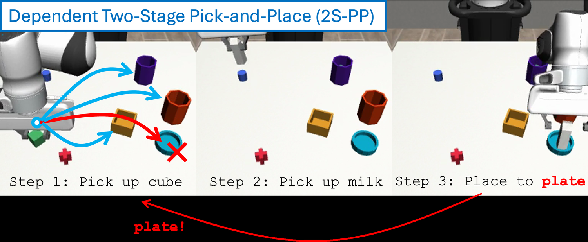

Full tuple coverage is unnecessary. Structured sparse subsets can recover strong OOD performance when they cover action-relevant dependencies.
We bound the compositional generalization gap by three terms, each with a different interpretation and controllability.
Whether individual subtask instructions are covered by training. This is a data issue resolvable only by expanding training support.
Whether familiar subtasks are recombined in unfamiliar ways at test time. Pairwise coverage in the training set controls this term.
The residual shift in context–action behavior when the policy is overly sensitive to irrelevant instruction correlations.
A modular policy that conditions only on the active subtask removes the explicit instruction-compositional term from the bound.
Explore per-task success rates across the 4×4×4 instruction cube. Rotate, filter by ID/OOD, and hover for details.
Small training sets with full marginal coverage still yield poor OOD success. However, full tuple coverage is also unnecessary — PP saturates at B=8, PPP at B=16, far below the full Cartesian products.
Success rate vs. training budget B · open standalone ↗
Diagonal pretraining learns reusable subtask skills but not instruction steering. Finetuning with only one demonstration per task improves OOD success from 0.4% to 54.7%.
OOD = tasks never seen during pretraining · +1 demo/instruction = one demonstration for each of the 64 task instructions · open standalone ↗
L5 Pick & Place (64 tasks) — pretrained on B sparse diagonal tasks, then finetuned with 1 demo per instruction
Takeaway: Even with as few as 4 pretraining tasks, one demonstration per instruction is enough to jump from near-zero to >50% OOD success — the skills were already there.
* B=8 baseline uses a single-seed evaluation (no 3-seed pooled baseline available for that checkpoint).
Here the two halves of the instruction depend on each other: the robot is told where the second object goes, and must work out where the first one goes. Covering more of those joint cases in training is what improves OOD success.
Dependent Two-Stage Pick-and-Place · fixed budget of 12 training tasks · open standalone ↗
The instruction is “put the cube away, then put the milk on the plate.” It never says where the cube goes — but because the plate is reserved for the milk, the cube may go anywhere except the plate.

4 first objects × 3 reserved destinations = 12 combinations in total. Every condition below trains on the same 12 demonstrations — only the number of distinct combinations they cover changes.
Rows are the first object (cube, cross, cylinder, milk); columns are the destination reserved for the second object. 12 filled = covered by training. The ringed cell is the cube × plate case from the figure above. Which cells fill is illustrative, not the exact experimental set.
Wider coverage more than doubles success on held-out combinations, and the robot picks the wrong container less often when it does act.
Both measured on held-out combinations only. The mistake rate is counted among the attempts where the robot actually put the first object down, so it isolates choosing the wrong container from simply failing to grasp.
36-task Dependent 2S-PP (l4_2s_no_cont0). Mean ± SE across training seeds. For reference, training on all 36 tasks reaches 37.4% success with a 5.6% mistake rate.
@inproceedings{anonymous2026compositional,
title = {Diagnosing Compositional Generalization in Sequential Robot Tasks},
author = {Anonymous},
year = {2026}
}